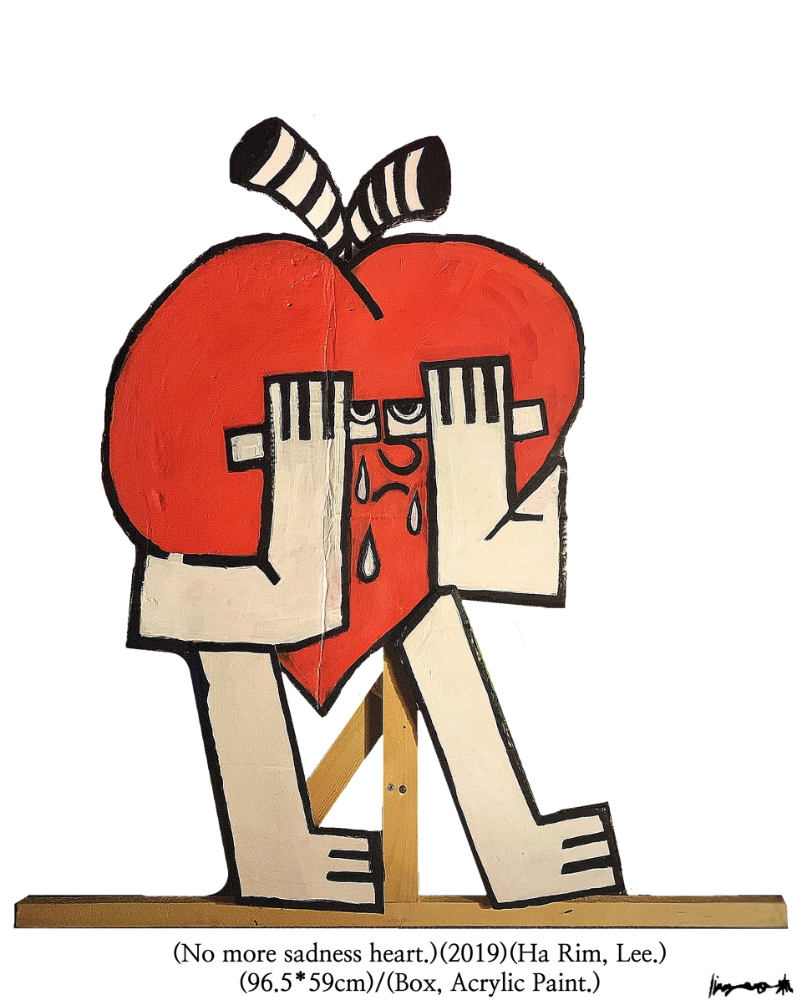
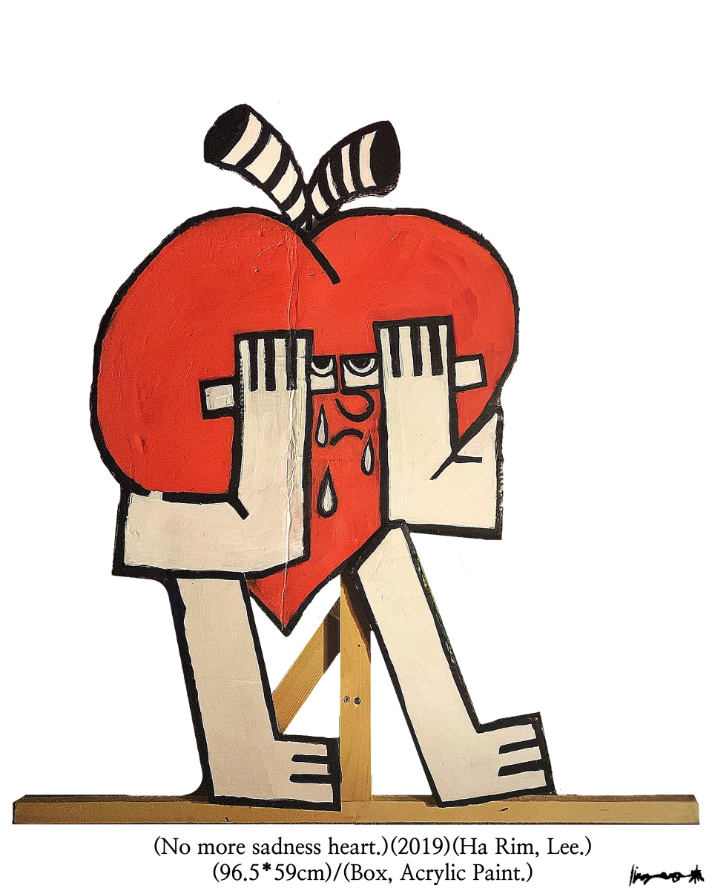

Ha Rim,Lee
Ha Rim, Lee
No More Sadness Heart.
“When we live with our wounds and sorrow hidden in our hearts, we find ourselves unstable. So I paint the picture by moving it on a box not on canvas”
“내면 깊숙이 상처와 슬픔을 숨겨둔 채 살아가다 보면
우리는 알게 모르게 불안정한 자신의 모습을 발견하게 된다.
그래서 나는 그 모습을 완벽함을 요구하는 캔버스가 아닌
누추한 상자 위에 옮겨 그려냈다.”
based in Busan


 
